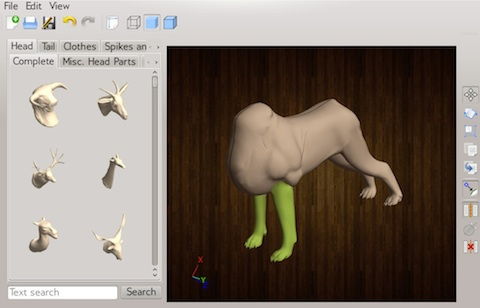
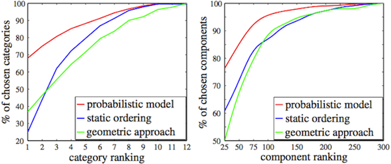

Probabilistic Reasoning for Assembly-Based 3D Modeling
Siddhartha Chaudhuri, Evangelos Kalogerakis, Leonidas Guibas, and Vladlen Koltun
ACM Transactions on Graphics 30(4) (Proc. SIGGRAPH), 2011 [BibTeX]
Preprint: [PDF]
Providing easy-to-use tools for the creation of detailed three-dimensional content is a key challenge for computer graphics research. Assembly-based modeling is a promising approach to making 3D modeling widely accessible. The advantage of assembly-based modeling is that users need not create new geometry from scratch; modeling reduces to selection and placement of components extracted from a database.
A key challenge in assembly-based 3D modeling is the identification of relevant components to be presented to the user. In this paper, we introduce a probabilistic reasoning approach to assembly-based modeling. Our approach studies a model library to learn how shapes are put together, and uses this knowledge to suggest semantically and stylistically relevant components at each stage of the modeling process.
To facilitate rapid creation of detailed 3D models by novices, we have developed a prototype assembly-based modeling tool that allows shapes to be composed via drag-and-drop. Suggested components are shown by category, with more relevant suggestions appearing first. When a component is dragged in, it is snapped and glued to the rest of the model for easy assembly. In our experiments, users with little or no modeling experience became proficient with the tool after only a few minutes of training and constructed detailed, attractive 3D models.
A key challenge in assembly-based 3D modeling is the identification of relevant components to be presented to the user. In this paper, we introduce a probabilistic reasoning approach to assembly-based modeling. Our approach studies a model library to learn how shapes are put together, and uses this knowledge to suggest semantically and stylistically relevant components at each stage of the modeling process.
To facilitate rapid creation of detailed 3D models by novices, we have developed a prototype assembly-based modeling tool that allows shapes to be composed via drag-and-drop. Suggested components are shown by category, with more relevant suggestions appearing first. When a component is dragged in, it is snapped and glued to the rest of the model for easy assembly. In our experiments, users with little or no modeling experience became proficient with the tool after only a few minutes of training and constructed detailed, attractive 3D models.
Video
A high-quality version of the video can be downloaded for offline viewing here (QuickTime, 44 MB).
Evaluation
To evaluate the relevance of shape components suggested by our probabilistic model, we recruited 42 volunteers. The volunteers were assigned two tasks: build a toy, and build a creature (see the paper for details). Three conditions were tested for each task: (a) with dynamic suggestions based on the probabilistic model, (b) with dynamic suggestions based on the geometric approach of [Chaudhuri and Koltun 2010] and (c) with a static ordering of components based on frequency of occurrence in the source database. In all, 141 modeling sessions were completed using our prototype assembly-based 3D modeling application, shown in the following screenshot (click to enlarge). Most participants had little or no prior experience with 3D modeling, and each was given only a 5-10 minute orientation with the application.

{kind=link}
The plots below show, for the creature task, the cumulative distribution of the ranks of categories from which components were chosen (left), and the cumulative distribution of the ranks of the chosen components within their respective categories (right). The results demonstrate that the probabilistic model (red) significantly outperforms the other approaches.

Models created with our approach are quite different from models in the source database. As the plots below show, a large number of components (left) from several source models (right) were used for each user-created shape (click to enlarge images).
{kind=link}
The individual components and modeling times for models created by participants are shown below (click on image to enlarge).